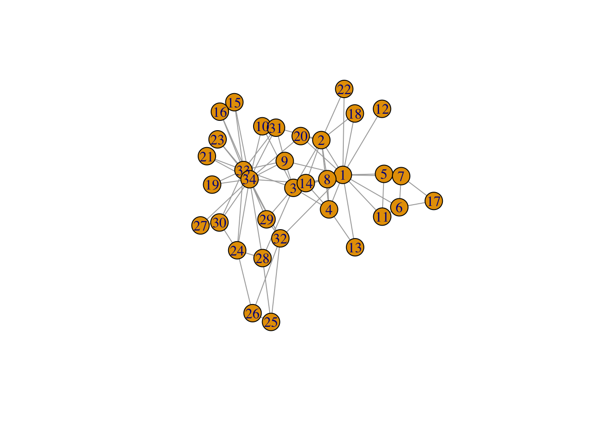
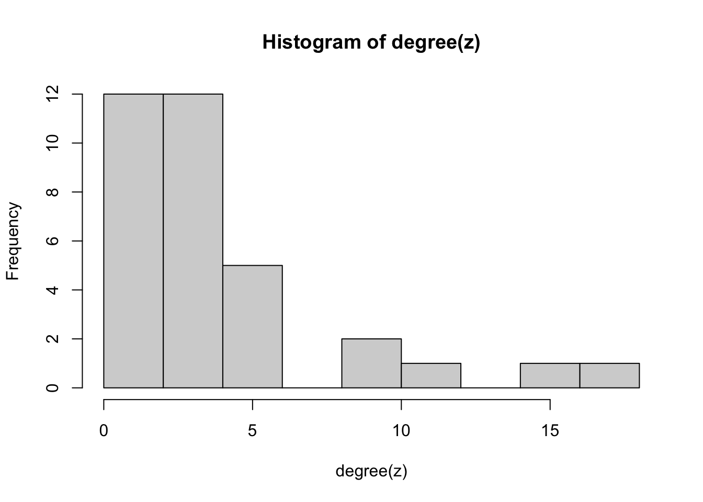
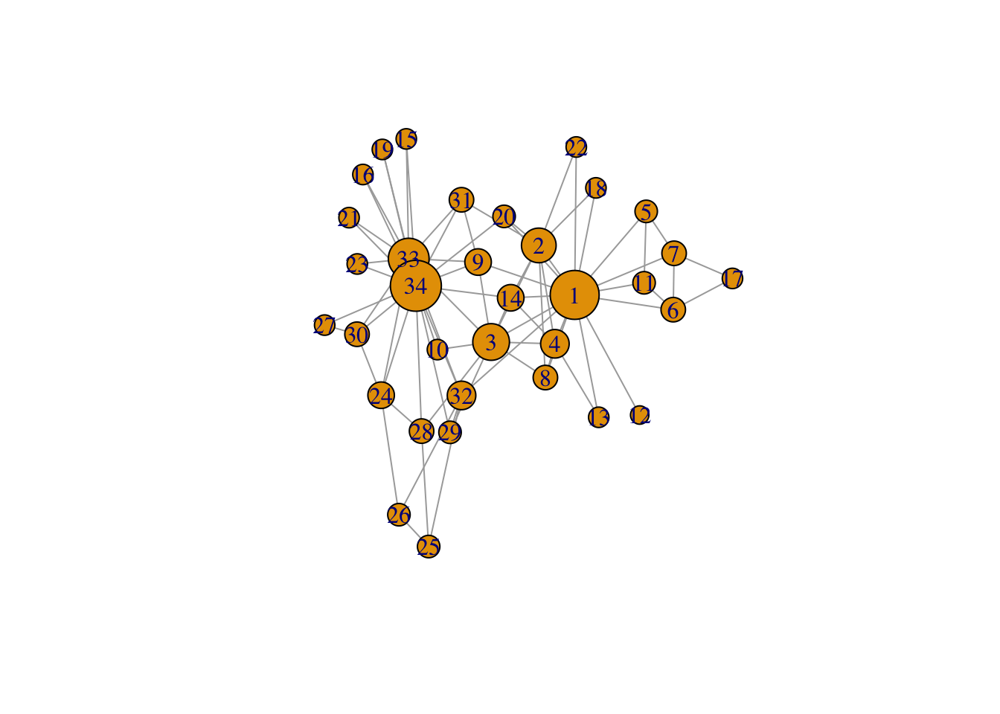

Tutorial 2-Basic network analysis
Zeyu(Zey)
2026-04-30
1 R Markdown
This is an R Markdown document. Markdown is a simple formatting syntax for authoring HTML, PDF, and MS Word documents. For more details on using R Markdown see http://rmarkdown.rstudio.com.
When you click the Knit button a document will be generated that includes both content as well as the output of any embedded R code chunks within the document. You can embed an R code chunk like this:
summary(cars)## speed dist
## Min. : 4.0 Min. : 2.00
## 1st Qu.:12.0 1st Qu.: 26.00
## Median :15.0 Median : 36.00
## Mean :15.4 Mean : 42.98
## 3rd Qu.:19.0 3rd Qu.: 56.00
## Max. :25.0 Max. :120.002 Including Plots
You can also embed plots, for example:

Note that the echo = FALSE parameter was added to the
code chunk to prevent printing of the R code that generated the
plot.
load “karate club” data
library(igraph)
z <- make_graph("Zachary")
z## IGRAPH 4c22809 U--- 34 78 -- Zachary
## + attr: name (g/c)
## + edges from 4c22809:
## [1] 1-- 2 1-- 3 1-- 4 1-- 5 1-- 6 1-- 7 1-- 8 1-- 9 1--11 1--12 1--13 1--14 1--18
## [14] 1--20 1--22 1--32 2-- 3 2-- 4 2-- 8 2--14 2--18 2--20 2--22 2--31 3-- 4 3-- 8
## [27] 3--28 3--29 3--33 3--10 3-- 9 3--14 4-- 8 4--13 4--14 5-- 7 5--11 6-- 7 6--11
## [40] 6--17 7--17 9--31 9--33 9--34 10--34 14--34 15--33 15--34 16--33 16--34 19--33 19--34
## [53] 20--34 21--33 21--34 23--33 23--34 24--26 24--28 24--33 24--34 24--30 25--26 25--28 25--32
## [66] 26--32 27--30 27--34 28--34 29--32 29--34 30--33 30--34 31--33 31--34 32--33 32--34 33--34plot(z)
check whether it is directional
is_directed(z)## [1] FALSE3 2.1 Network level: a “five number summary”
Ask for numbers of vertices and edges specifically
vcount(z)## [1] 34ecount(z)## [1] 78Density: existing edges / the maximum possible number of edges
edge_density(z)## [1] 0.1390374QUESTION: How would you calculate density using
ecount() and vcount()?
ecount(z)/(vcount(z)*(vcount(z)-1)/2)## [1] 0.1390374#for undireactionalIf desired, we can also add such network-level results to the network object, for later use:
z$density <- edge_density(z)
z## IGRAPH 4c22809 U--- 34 78 -- Zachary
## + attr: name (g/c), density (g/n)
## + edges from 4c22809:
## [1] 1-- 2 1-- 3 1-- 4 1-- 5 1-- 6 1-- 7 1-- 8 1-- 9 1--11 1--12 1--13 1--14 1--18
## [14] 1--20 1--22 1--32 2-- 3 2-- 4 2-- 8 2--14 2--18 2--20 2--22 2--31 3-- 4 3-- 8
## [27] 3--28 3--29 3--33 3--10 3-- 9 3--14 4-- 8 4--13 4--14 5-- 7 5--11 6-- 7 6--11
## [40] 6--17 7--17 9--31 9--33 9--34 10--34 14--34 15--33 15--34 16--33 16--34 19--33 19--34
## [53] 20--34 21--33 21--34 23--33 23--34 24--26 24--28 24--33 24--34 24--30 25--26 25--28 25--32
## [66] 26--32 27--30 27--34 28--34 29--32 29--34 30--33 30--34 31--33 31--34 32--33 32--34 33--34Number of components: the number of unconnected parts of the network
count_components(z)## [1] 1The diameter of a network: the “longest shortest path” in the network
diameter(z)## [1] 5The average shortest path length: the average of all the shortest path over all pairs of vertices in the network. (the key indicator in the “small world phenomenon”)
mean_distance(z)## [1] 2.4082Clustering (transitivity): the extent to which triangles tend to be closed in the network, or put differently, to what extent neighbors of nodes tend to be connected themselves.
Clustering Coefficient: for each vertex, the proportion of the potential ties between the vertex’ neighbors that actually exist (in the ego networks literature, this is referred to as local density), and averages this over all vertices.
transitivity(z, type="average")## [1] 0.58793064 2.2 Individual level: centrality
Degree centrality: the number of connections per node
degree(z)## [1] 16 9 10 6 3 4 4 4 5 2 3 1 2 5 2 2 2 2 2 3 2 2 2 5 3 3 2 4 3 4 4 6
## [33] 12 17#note this is a vector, and can be further analysed:
summary(degree(z))## Min. 1st Qu. Median Mean 3rd Qu. Max.
## 1.000 2.000 3.000 4.588 5.000 17.000hist(degree(z))
# keep the individual-level results on centrality and add them to the network object for later use
V(z)$degree <- degree(z)
#use it in a plot
#We add + 8 to degree to avoid that the lowest-degree nodes become really small and specify margin = -0.1 to reduce the whitespace around the plot
plot(z, vertex.size = V(z)$degree+8, margin= -0.1)
#extract the degree of a specific vertex
degree(z, v = 3)## [1] 10betweenness centrality:
step1: find shortest paths in all vertices pairs
step2: find how many these shortest paths go through a certain vertice
betweenness(z)## [1] 231.0714286 28.4785714 75.8507937 6.2880952 0.3333333 15.8333333 15.8333333 0.0000000
## [9] 29.5293651 0.4476190 0.3333333 0.0000000 0.0000000 24.2158730 0.0000000 0.0000000
## [17] 0.0000000 0.0000000 0.0000000 17.1468254 0.0000000 0.0000000 0.0000000 9.3000000
## [25] 1.1666667 2.0277778 0.0000000 11.7920635 0.9476190 1.5428571 7.6095238 73.0095238
## [33] 76.6904762 160.5515873#add it to the network object
z <- z %>%
set_vertex_attr(
name = "betweenness",
value = betweenness(z)
)closeness centrality: relies on shortest paths, assesses how close each node is to the other nodes
V(z)$closeness <- closeness(z)
V(z)$closeness## [1] 0.01724138 0.01470588 0.01694915 0.01408451 0.01149425 0.01162791 0.01162791 0.01333333
## [9] 0.01562500 0.01315789 0.01149425 0.01111111 0.01123596 0.01562500 0.01123596 0.01123596
## [17] 0.00862069 0.01136364 0.01123596 0.01515152 0.01123596 0.01136364 0.01123596 0.01190476
## [25] 0.01136364 0.01136364 0.01098901 0.01388889 0.01369863 0.01162791 0.01388889 0.01639344
## [33] 0.01562500 0.01666667